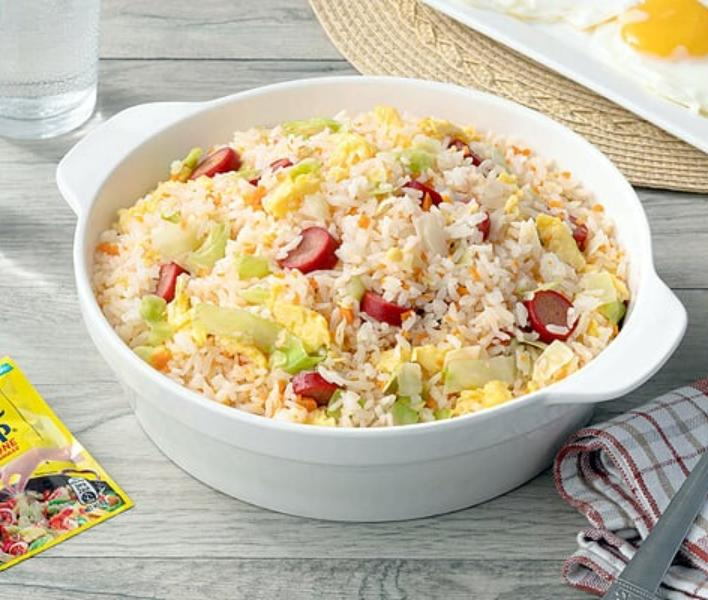

Hotdog Fried Rice

Description
Fried rice is a dish of cooked rice that has been stir-fried in a wok or a frying pan and is usually mixed with other ingredients such as eggs, vegetables, seafood, or meat. It is often eaten by itself or as an accompaniment to another dish.
Ingredients
- 4 cloves Garlic
- 1 pc Onion
- 1 pc Carrot
- 2 pcs Hotdog
- 2 tbsp Vegetable Oil
- 2 pcs Egg
- 3 cups Cooked Rice
- 1 sachet Maggi Magic Sarap 8g
- 0.5 cup Cabbage
Steps
- Sauté garlic, onion, carrot and hotdog in oil. 10mins
- Push on the side and pour beaten eggs. Stir and cook until barely set. 5 mins
- Add rice and season with MAGGI® Magic Sarap®. Pour 2 tbsp of water on the side and gently fluff until steaming hot. Stir in cabbage. Transfer on a serving plate and serve. 5 mins